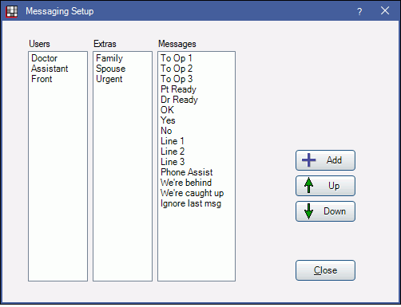

Message Element
Messaging elements are the pieces of information used in Messaging and Messaging Buttons.
In the Main Menu, click Setup, Manage, Messaging.
There are three types of elements:
- Users: The User the message is sent to or received from.
- Extras: Other text that shows in a message, such as urgent.
- Messages: The main message text.
Click Add, or double-click on a messaging element to edit.

Select the messaging element criteria, then click OK to save.
- Type: Determines the column the element appears in.
- Text: The element's identifying label.
- Sound: Associate sound with this element. when a message is sent using the element, a sound notification will accompany the message. Sounds play on all workstations.
- Several sound files are preloaded into Open Dental. There are also 12 additional prerecorded spoken messages (e.g. Hygienist 1, Patient Arrived) available for download: sounds.zip.
- Play: If a sound is already attached to the item, click Play to hear it.
- Delete: Remove the sound from the element.
- Import: Import a wav sound file.
- Export: Export the current wav sound file.
- Windows Recorder: Record sounds on any Windows operating system except Windows 10 with this button. A sound bar shows that the microphone is picking up sounds.
- Record New: Record sounds. You can automatically import the sound files with this recorder.
- Click Record New.

- Click Record, record your message, then click Stop.
- Click OK to automatically import the sound file (Record New only).
- Or, click Save to manually save the file as a wav.
- Import the sound to attach it to a message element and save it in the database if you click Save instead of OK.
- Click Record New.
- Light Row and Color: Attached to elements used in messaging buttons.
- Light Row: Use for elements that identify a location (e.g. Op1, Op2, Line 1) or message (e.g. Patient Ready). This is the row that will light up when the element is triggered.
- Light Color: The unique color attached to the element. Usually attached to user or message (e.g. Doctor, Patient Ready).